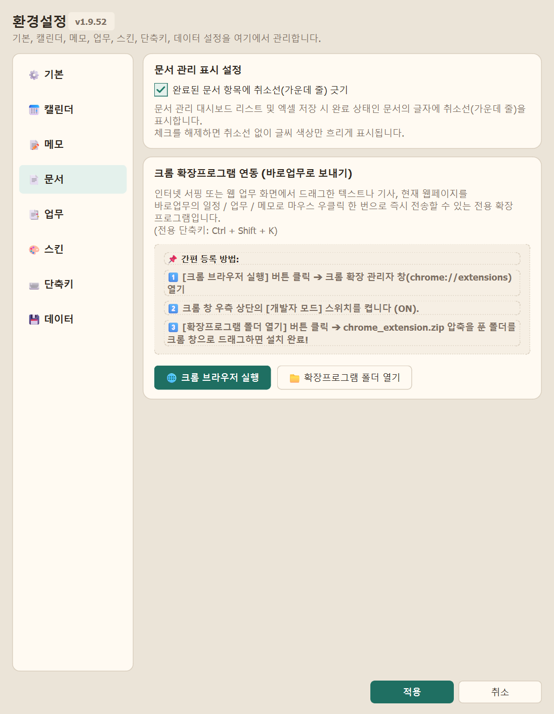
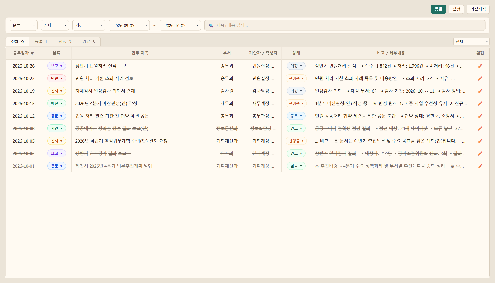
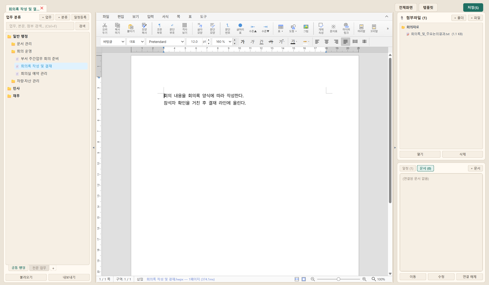
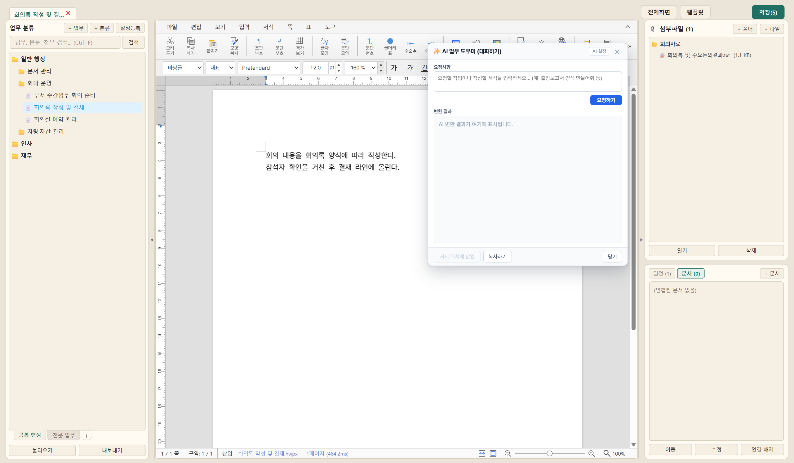

| 구분 | 주요 핵심 기능 | 기대 효과 |
|---|---|---|
| ① 일정관리 | 공휴일·대체공휴일 동적 계산, 음력/24절기 표기, 사전 알람, 스티커 | 법정 기한 준수 및 주요 일정 누락 방지 |
| ② 메모관리 | 바탕화면 플로팅 메모(자동 복원), 그룹별 분류 및 화면 핀 고정 | 단기 현안 및 일일 처리 메모 즉시 확인 |
| ③ 문서관리 (신규) | 온나라/사내 웹 화면 우클릭 수합, 엑셀형 목록, 접수·진행·완료 추적 | 접수 공문 및 타 부서 수합 업무 일원화 |
| ④ 업무관리 (신규) | 웹한글 에디터 내장, 단위업무 트리, 첨부파일·관련문서·일정 통합 | 인수인계 편람 구축 및 기안 원스톱 처리 |
|
[1단계] 웹 브라우저 우클릭

온나라/웹 화면 마우스 우클릭
공문서나 게시물을 드래그 후 [바로업무로 보내기] 선택 시 제목·내용·링크 자동 캡처
|
[2단계] 업무 등록창 자동 기입

등록 팝업창 자동 완성
게시물 제목, 본문 발췌문, 원본 링크가 즉시 자동 입력되며 담당자·기한 지정 후 바로 등록 |
[3단계] 문서 목록 리스트업
대시보드 일괄 현황 관리
수합된 문서가 표 형태로 정리되며, 접수·진행·완료 상태를 클릭하여 실시간 처리 여부 확인 |
|
① 좌측: 업무 분류 체계 트리

분류별 폴더·탭 구조화
사업별·담당자별 단위업무를 트리 형태로 체계적 정리하여 인수인계 편람 구축 |
② 중앙/우측: 한글 본문 및 첨부파일
내장 웹한글 에디터 & 첨부 관리
별도 프로그램 없이 HWP 규격 공문·표 작성, 우측 카드에서 관련 참고파일 일괄 관리 |
③ 우측하단: 관련문서 & 일정 연계
관련 온나라 문서 연결 & 일정 등록
해당 업무와 관련된 온나라 문서를 연계하고, 마감일을 메인 캘린더 일정으로 원클릭 등록 |
|
기능 1. 전체화면 에디팅 모드
모니터 전체화면 집중 편집
상단 [전체화면] 버튼으로 장문 보고서 및 복잡한 서식을 넓은 화면에서 쾌적하게 작성
|
기능 2. AI 이미지 생성 & 문맥 교정

AI 공문서 다듬기 & 이미지 삽입
본문 우클릭 AI로 개조식 변환·요약, "사과 일러스트 그려줘" 요청 시 즉석 생성 후 본문 자동 삽입 |
기능 3. HWP 파일·폴더 드래그&드롭
탐색기에서 파일/폴더 끌어다놓기
기존 한글 문서( .hwp, .hwpx)나 이미지를 에디터로 드래그하여 즉시 열람 및 가져오기
|